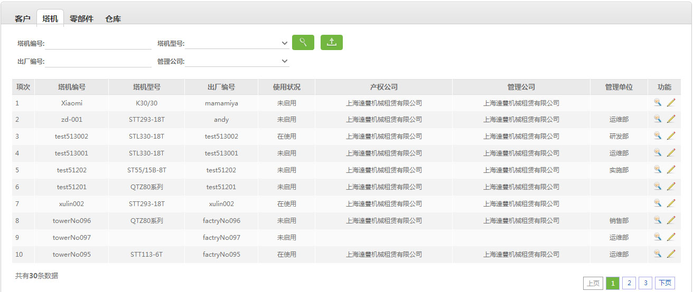

9.2、塔机资料

业务背景：
塔机状态说明:
1. 闲置：新采购的塔机初始状态或者塔机不在工程项目中。(在仓库中或超过停租时间)
2. 未启用：塔机放置在工程项目中但是尚未开始运作。(调度确认，无起租时间)
3. 在使用：塔机放置在工程项目中并且有起租时间。（调度确认，有起租时间；超过冬停时间、未超过停租时间）
4. 冬停：塔机放置在工程项目中并且有记录冬停时间；（设备日程中，有冬停记录，设备日程并有起始时间）
5. 托管：外租塔机的间歇期的状态；（外租塔机，超过停租时间、没有开始使用）
说明：
1、 进行塔机资料查询，查询条件：塔机编号、塔机型号、出厂编号、所属公司；
进行塔机资料查询，查询条件：塔机编号、塔机型号、出厂编号、所属公司；
2、 导出查询的所有部门内容;
导出查询的所有部门内容;
3、查看塔机资料， 编辑塔机资料。
编辑塔机资料。